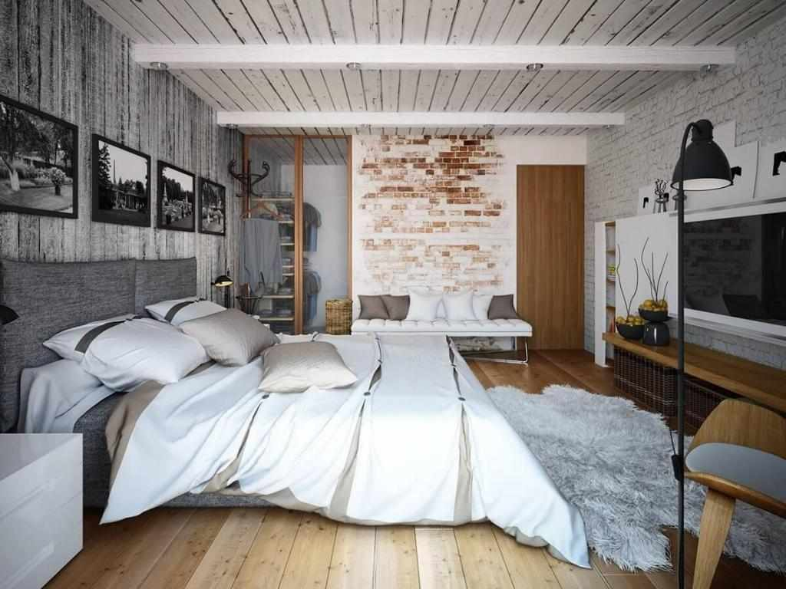

Отличный результат! Ты неплохо ориентируешься в тканях и всегда сможешь отличить по-настоящему качественное белье от подделки. Твоя «здоровая» консервативность и верность личным принципам оценки текстиля – повод для гордости. Вы получаете скидку в 10%.
